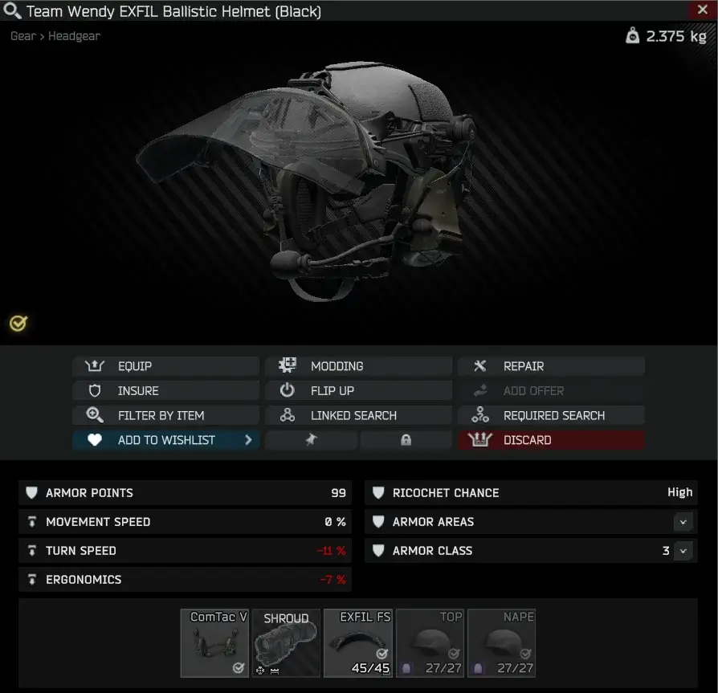

Mod
Black Exfil Revision
- Downloads
- 11,751
- Favourites
- 38
- Mod lists
- 47
This mod displayed a profile-binding notice on Forge.
📜 Description
Black Exfil Revision is a mod for Single Player THE CITY that lets you equip compatible face shields on the Black Exfil helmet once again.
📁 Installation
- Download the latest release
- Copy the
SPTfolder into your SPT installation - Start the game
📷 Preview

📄 License
Distributed under the MIT License. See LICENSE for more information.